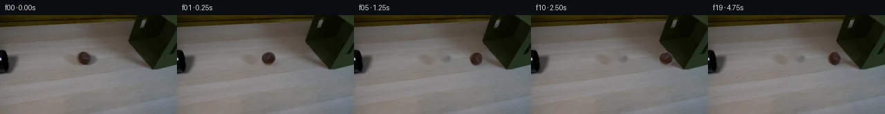
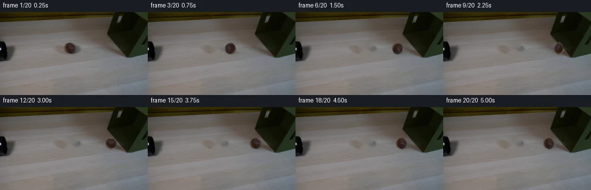
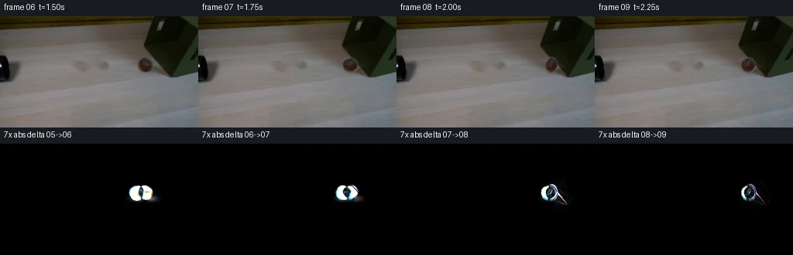

V0 · 初版 · 最终提交
![]()
Observable Generation Trace
把最终像素视频、Harness 冻结的每轮候选、真实工具事件和 Agent 自述放在同一页。可观测证据与模型自述分开标记，避免把“模型说它检查过”误当成真实工具调用。
![首帧]()
Static locked-off single-shot with fixed frame throughout filmed with constant framerate in real-time. The scene shows a realistic scientific demonstration. The scene only contains the described setup and actions. The olive green fabric box is on a light wooden table and a black tube points from the left side to the right side. The brown tennis ball rolls from the left straight out of the black tube and hits the olive green fabric box.
首帧显示在左侧播放器初始画面。Track 权限、隔离和 tensor 一致性来自 run manifest，而不是 METHOD.md。
默认勾选初版和最终版；可选其他版本一起同步播放。仅检查图更新的连续重复快照已合并，回退旧视频仍保留为一次修订。
Observable events
来源：events.jsonl + run manifest
此 Track 禁止读取输出图片。逐轮预览由外部 Harness 自动冻结，只用于事后审计，生成 Agent 当时看不到这些页面。
Frozen candidates
每张图来自该 round 的真实 00 / 01 / 05 / 10 / 19 帧

pixels b7a534eacb7b237d · code 15f985b03988ef59
--- previous/generate.py +++ current/generate.py @@ -0,0 +1,196 @@ +#!/usr/bin/env python3 +"""Generate the 20-frame PixelWorld continuation using only local pixel operations.""" + +from pathlib import Path + +import cv2 +import numpy as np +from PIL import Image, ImageDraw + +import artifact_io + + +ROOT = Path(__file__).resolve().parent +WIDTH, HEIGHT = 256, 144 +BALL_SOURCE_CENTER = (121.0, 63.0) +BALL_RADIUS = 10.4 + + +def make_clean_plate(source: np.ndarray) -> np.ndarray: + """Remove the frame-00 ball and its small cast shadow with local inpainting.""" + mask = np.zeros((HEIGHT, WIDTH), np.uint8) + cv2.ellipse(mask, (121, 63), (13, 12), 0, 0, 360, 255, -1, cv2.LINE_AA) + cv2.ellipse(mask, (127, 69), (15, 6), 0, 0, 360, 255, -1, cv2.LINE_AA) + # TELEA preserves the smooth tabletop illumination using only neighboring pixels. + return cv2.inpaint(source, mask, 4.0, cv2.INPAINT_TELEA) + + +def make_ball_source(source: np.ndarray): + """Extract a premultiplied, feathered copy of the actual photographed ball.""" + size = 29 + half = size // 2 + cx, cy = map(int, BALL_SOURCE_CENTER) + rgb = source[cy - half : cy + half + 1, cx - half : cx + half + 1].astype(np.float32) + yy, xx = np.mgrid[0:size, 0:size] + # The visible body is close to circular; the outer 1.35 px is antialiased. + distance = np.sqrt(((xx - half) / 10.35) ** 2 + ((yy - half) / 10.1) ** 2) + alpha = np.clip((1.045 - distance) / 0.135, 0.0, 1.0).astype(np.float32) + premultiplied = rgb * alpha[..., None] + return premultiplied, alpha, (half, half) + + +def localized_fabric_yield(frame: np.ndarray, amount: float) -> np.ndarray: + """Warp only a small neighborhood of the box edge during the soft collision.""" + if amount <= 0: + return frame + yy, xx = np.mgrid[0:HEIGHT, 0:WIDTH].astype(np.float32) + gaussian = np.exp(-0.5 * (((xx - 209.0) / 7.5) ** 2 + ((yy - 63.0) / 11.5) ** 2)) + gaussian *= np.clip((xx - 196.0) / 8.0, 0.0, 1.0) + map_x = xx - amount * gaussian + map_y = yy + return cv2.remap(frame, map_x, map_y, cv2.INTER_LINEAR, borderMode=cv2.BORDER_REPLICATE) + + +def add_contact_shadow(frame: np.ndarray, center_x: float, center_y: float, compression: float) -> np.ndarray: + """Add a subdued moving shadow that anchors the rolling ball to the table.""" + yy, xx = np.mgrid[0:HEIGHT, 0:WIDTH].astype(np.float32) + shadow_x = center_x + 4.3 + shadow_y = center_y + 7.1 + sigma_x = 7.0 + 1.8 * compression + sigma_y = 2.45 + shadow = np.exp(-0.5 * (((xx - shadow_x) / sigma_x) ** 2 + ((yy - shadow_y) / sigma_y) ** 2)) + strength = 0.20 + 0.03 * compression + out = frame.astype(np.float32) * (1.0 - strength * shadow[..., None]) + return np.clip(np.rint(out), 0, 255).astype(np.uint8) + + +def render_ball( + frame: np.ndarray, + ball_premult: np.ndarray, + ball_alpha: np.ndarray, + source_center, + center_x: float, + center_y: float, + angle_deg: float, + scale_x: float = 1.0, + scale_y: float = 1.0, +) -> np.ndarray: + """Rotate/scale the source ball with premultiplied-alpha resampling.""" + theta = np.deg2rad(angle_deg) + cos_t, sin_t = np.cos(theta), np.sin(theta) + rotation = np.array([[cos_t, -sin_t], [sin_t, cos_t]], dtype=np.float32) + transform = np.diag([scale_x, scale_y]).astype(np.float32) @ rotation + source_center = np.asarray(source_center, dtype=np.float32) + translation = np.asarray([center_x, center_y], dtype=np.float32) - transform @ source_center + affine = np.column_stack([transform, translation]).astype(np.float32) + + warped_alpha = cv2.warpAffine( … diff truncated; 109 more lines …
Final visual checks
Harness 保存的最终产物


Agent claims
以下文字由生成 Agent 撰写，不等同于工具证据
Inspection was performed only with local Python/Pillow/NumPy numeric RGB data. No image viewer or image-reading tool was used.
first_frame.png, RGB, 256 x 144.The heavy, fabric-covered box is modeled as much more massive than the ball. The brown tennis ball travels right with nearly constant speed, compresses briefly at the soft boundary, then rebounds with low restitution and is slowed by rolling friction.
| Frame | Time | Planned action |
|---|---|---|
| 00 | 0.00 s | Exact source frame; ball center ~x121. |
| 01 | 0.25 s | Ball rolls right to x132; first-frame ball site is restored from a clean plate. |
| 02 | 0.50 s | Ball at x143; surface texture rotates consistently with travel. |
| 03 | 0.75 s | Ball at x154. |
| 04 | 1.00 s | Ball at x165. |
| 05 | 1.25 s | Ball at x176. |
| 06 | 1.50 s | Ball at x187, approaching the box. |
| 07 | 1.75 s | Ball at x196, just before contact. |
| 08 | 2.00 s | Maximum contact near x200: ball horizontally compresses, fabric edge yields about 2 px. |
| 09 | 2.25 s | Separation begins near x198; ball regains its round shape; fabric recoil begins. |
| 10 | 2.50 s | Weak rebound left to x195; residual fabric displacement decays. |
| 11 | 2.75 s | Rebound continues to x192.2. |
| 12 | 3.00 s | Ball at x189.8, visibly decelerating. |
| 13 | 3.25 s | Ball at x187.8. |
| 14 | 3.50 s | Ball at x186.1. |
| 15 | 3.75 s | Ball at x184.8. |
| 16 | 4.00 s | Ball at x183.8. |
| 17 | 4.25 s | Ball at x183.0, nearly stopped. |
| 18 | 4.50 s | Ball at x182.5. |
| 19 | 4.75 s | Ball settles at x182.2; no camera motion. |
This continuation was made entirely with local deterministic Python pixel operations (NumPy, Pillow, and OpenCV). No network resources, external models, external engines, other cases, masks, or image viewing tools were used.
first_frame.png was inspected through numeric RGB samples, threshold runs, color clustering, and edge statistics. The observed ball body is centered near (121, 63), its visible radius is about 10 px, and the closest box boundary is near x=207-213 at that height.
Frame 00 is a byte-for-byte PNG copy in effect: the source RGB array is passed unchanged to the saver. For later frames, the original ball and its short shadow are removed with a tightly bounded OpenCV TELEA inpaint mask. This produces a stationary clean plate while retaining the photographed tube, wood, box, lighting gradients, and surrounding texture.
The moving ball is not a newly invented flat circle. A 29 x 29 patch centered on the photographed ball is extracted from frame 00. An elliptical feathered alpha isolates the body. RGB is premultiplied by alpha before cubic affine resampling so rotated edges do not acquire dark or bright halos.
The ball moves from x=121 to x=200 over frames 00-08. Its texture rotation uses the rolling constraint
angle = -(x - x0) / radius
with radius 10.4 px. At maximum impact the rendered ball scales to 0.79 horizontally and 1.08 vertically. It recovers over the next frame, rebounds with low restitution, and decelerates to x=182.2 by frame 19. A soft analytic contact shadow follows the ball and is slightly broadened during compression.
At frames 08-10, a Gaussian-weighted horizontal remap shifts only the local box-edge neighborhood. Peak yield is 2.2 px at contact and decays to 1.1 px and 0.35 px. This models a soft fabric boundary without moving the locked camera or sliding the much heavier box.
artifact_io.save writes the 20 PNGs, packed tensor, inspection sheet, and standalone player. transition_check.png contains frames 06-09 and 7x amplified adjacent-frame RGB differences for the approach/contact interval.
The generator verifies all of the following after writing:
(20, 144, 256, 3) and uint8 RGB frames;first_frame.png;pixels.npz shape (144, 256, 20), dtype uint32, and exact equality to packed 0xRRGGBB frame values.No claim of visual review is made; review and revision were based on the permitted numeric RGB inspection and transition measurements.